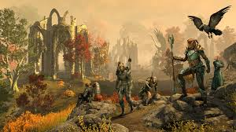
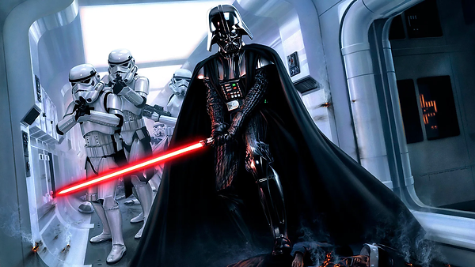
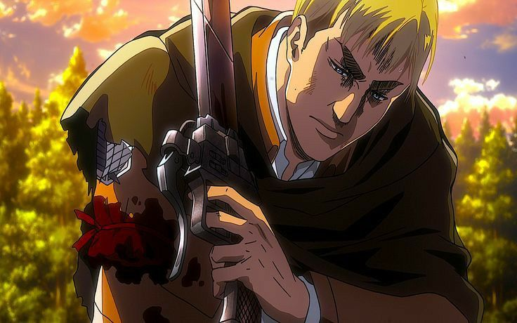

<!DOCTYPE html>
<html lang="pt-br">

</html>

<head>
    <meta charset="UTF-8">
    <meta name="viewport" content="width=device-width, initial-scale=1.0">
    <title>Comics Geek</title>
    <link rel="stylesheet" href="../css/principal.css">
    <link rel="preconnect" href="https://fonts.googleapis.com">
    <link rel="preconnect" href="https://fonts.gstatic.com" crossorigin>
    <link href="https://fonts.googleapis.com/css2?family=Outfit:wght@100..900&display=swap" rel="stylesheet">
</head>

<body>

    <header>
        <div>
            
            <h1>
                Geek Map
            </h1>
        </div>
        <ul>
            <li>
                <a href="#">Filmes</a>
            </li>
            <li>
                <a href="#">Animes</a>
            </li>
            <li>
                <a href="#">Filmes</a>
            </li>
            <li>
                <a href="#">Mangás</a>
            </li>
        </ul>
    </header>
    <main>
        <nav class="nav">
            <h1>Atualize-se de tudo do o mundo Geek!</h1>
            <hr class="linhanav">


        </nav>
        <section>
            <article class="elderart">
                <div id="ElderScrolls">
                    
                    <div class="texthelder">
                        <h1> do Novo Jogo de RPG da Série "The Elder Scrolls</h1>

                        <p>A Bethesda anunciou oficialmente o lançamento de um novo jogo de RPG <br> no universo de "The
                            Elder
                            Scrolls". O jogo, que ainda não tem um título oficial<br> promete expandir o mundo de
                            Tamriel
                            com uma
                            nova história e mecânicas<br> de jogo inovadoras. Espera-se que o jogo traga gráficos de
                            última
                            geração<br>
                            e um enredo envolvente que vai agradar tanto aos veteranos quanto aos novos<br> jogadores
                        </p>
                    </div>
                </div>
            </article>
            <article>
                <div class="darth">
                    
                    <div class="Star">
                        <h1>Nova Série de 'Star Wars' Apresenta Jedi do Século XXI</h1>
                        <p>
                            A Lucasfilm anunciou uma nova série no universo de Star Wars<br> intitulada Star Wars: A
                            Nova
                            Ordem. Ambientada no século XXI <br> a série introduzirá uma nova geração de Jedi que
                            misturam
                            técnicas<br> antigas com tecnologia moderna. Os fãs podem esperar saber mais <br> sobre como
                            os Jedi
                            se adaptaram à era digital, com novos tipos de sabres <br> de luz e droides Jedi. O show
                            será
                            transmitido no Disney+ e a estreia está <br> marcada para o final de 2024.
                        </p>
                    </div>
                </div>
            </article>
            <article>
                <div class="erwins">
                    

                    <div>
                        <h1> O Mundo dos Animes: 'Attack on Titan' Terá Spin-Off Focado em Erwin Smith </h1>
                        <p>
                            A popular série de anime Attack on Titan está recebendo um spin-off dedicado <br> a Erwin
                            Smith,
                            o
                            carismático comandante da Tropa de Exploração. O novo anime <br> intitulado Attack on Titan:
                            O
                            Legado de Erwin, explorará o passado e as batalhas <br> de Erwin antes dos eventos
                            principais da
                            série. A série, que será produzida pelo estúdio <br> WIT, promete explorar mais a fundo a
                            história e
                            o desenvolvimento do personagem <br> com estreia prevista para o início de 2025.
                        </p>
                    </div>
                </div>
            </article>
            <article>
                <div class="xbox">
                    
                    <div>
                        <h1>A Grande Guerra dos Consoles: Xbox Anuncia Novo Console com Tecnologia<br> de Realidade Mista
                        </h1>
                        <p>
                            A Microsoft revelou o Xbox X-2, um novo console que incorpora tecnologia de realidade mista <br>
                            combinando gráficos de alta definição com elementos de realidade aumentada. O Xbox X-2 <br>
                            permitirá que os jogadores interajam com seus jogos de uma maneira nunca antes vista <br>
                            misturando ambientes virtuais com o mundo real. O lançamento está previsto para o final de
                            2024<br> e a Microsoft promete uma experiência de jogo revolucionária, com suporte para uma
                            vasta gama <br> de jogos e aplicações de realidade mista.
                        </p>
                    </div>
                </div>
            </article>
         </section>
         <footer>
        <h2>
            Projeto teste desenvoldido por <a href="https://github.com/cesarssouz">Cesar</a>
        </h2>

         </footer>
        
    </main>

</body>

</html>